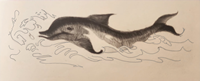
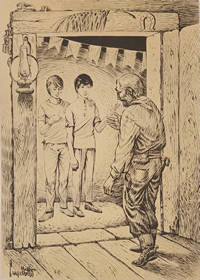
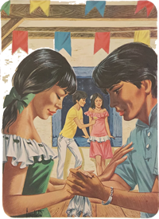
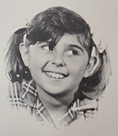
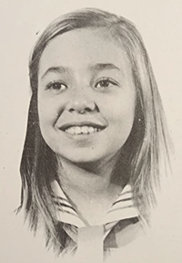
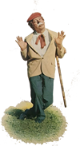

Viajando num velho caminhão que conseguiram alugar no povoado perto do acampamento, nossos amigos foram ver o Rio Amazonas. Vamos encontrá-los já descidos do veículo, ainda um tanto longe do rio, preparando-se para caminhar.
- Até que chegamos depressa, não é? – disse o Arrelia. Daqui por diante faremos o caminho a pé pois de condução não dá. Não se assustem que estamos perto. Logo chegaremos ao Rio Amazonas. Antes quero passar na casa de um amigo meu. Faz muito tempo que não o vejo.
- Conhece esse rio, Arrelia? – perguntou Marisa, dando-lhe a mão.
- Sim. Estive aqui uma vez, faz muito tempo. Eu já não havia contado? Eu com outros amigos fizemos uma grande pescaria. Estivemos hospedados na casa dessa pessoa que lhe falei, o Alberto. Logo chegaremos à casa dele. Daqui dá para avistá-la. Olhem! Lá embaixo, na curva! Estão vendo?
As crianças disseram que sim e eles começaram a andar.
- Vamos mais depressa que o Sol não está brincadeira! – pediu Arrelia. Que calor!
- Não aguento mais de sede! – gemeu Jaci.
- Eu também! – disse Marisa. Como está quente!
- Só um pouco mais de coragem – pediu o Arrelia. Quando chegarmos àquela casa poderemos tomar água à vontade. Tenham um pouco de paciência.
Arrastaram-se mais uns minutos e chegaram à desejada casa de Seu Alberto.
- Aqui estamos – suspirou o Arrelia. Campainha não tem. Vamos bater palmas. Será que não tem ninguém? – Ó de casa!
Um homem forte e sorridente veio abrir o portão:
- Arrelia! Mas que surpresa! Há quanto tempo!
- É mesmo. O tempo não para. Você não mudou muito, não. Até parece mais “sacudiudo”!
- Também você não mudou. Vamos entrando! A casa é sua! Essas crianças vieram com você?
- Vieram. São uns amiguinhos que estão viajando comigo. Parece que não aguentam mais de sede! Acho que também estou com uma “brausa”na boca!
- Aqui tem uma água fresquinha! Venham!
Foram entrando. O Arrelia dirigiu-se às crianças:
- Ei, “criançauda”! Não vão beber toda a água do homem!

- Que bebam, Arrelia. Água não falta. Mesmo que fosse pouca seria para os amigos!
- Você é “camarauda”, Albertão! Mais um pouco e teríamos explodido! – disse o Arrelia enquanto bebiam água com vontade.
- Será que as crianças não querem brincar aí no terreiro? – perguntou Seu Alberto. Está cheio de árvores com frutas.
- Quem são aquelas meninas bonitas ali na escada? – quis saber o Arrelia.
- São minhas sobrinhas, Ocidéia e Vânia. Estão passando as férias aqui em casa. – Vão brincar com elas, vão! – disse dirigindo-se às crianças. Elas conhecem bem o sítio.
Seu Alberto dirigiu-se ao Arrelia:
- Quero que sejam meus hóspedes. Temos acomodações suficientes.
- Muito “obrigaudo” mas vamos embora ainda hoje. Esta nossa excursão é um pouco rápida e vou levar as crianças para conhecerem outras regiões.
- É uma triste notícia. Que pena!
- Bem que eu gostaria de ficar por aqui. Vamos ver, em outra oportunidade... Mas escute uma coisa. E o Raimundo? Aquele caboclo muito bom que participou da nossa pescaria, lembra-se?
- Lembro-me, como não? Anda por aí. Está diferente. Não ficou muito certo, sabe? Dizem que ele viu a iara. Sabe, o pessoal daqui... De qualquer forma, ele não está bom da cabeça.
- Não “diuga”! Era uma boa pessoa. Mas está louco?
- Não é bem louco. Ele faz algum trabalho. Só que anda com uma porção de manias. Tem suas horas, entende?
- Manias? Manias de quê?
- Uma porção de manias. Geralmente cisma que é um boto.
- Boto? Gostaria de mostrar um boto às crianças.
- Não é fácil. Se ficassem mais uns dias... Mas voltando ao assunto, faz pouco tempo o Raimundo estava perto do rio e de repente achou que era hora de transformar-se em boto. Pulou na água como estava: de botinha e tudo. Quase morreu afogado. Não se contentou. À noite foi a um baile e cismou de dançar com todas as moças. Os namorados de algumas não gostaram e resolveram dar-lhe uma lição. A sorte foi que eu estava lá e expliquei que ele era doente e sofria de mania de boto. Depois de muito esforço consegui que ele fosse para outra sala. Eu lhe disse que um boto também precisa descansar. Aí ele concordou em ficar sentado, lá, sozinho. Foram uns momentos de paz. Depois veio um barulho do lugar onde ele estava. Corremos todos. O Raimundo encontrava-se completamente bêbado, quebrando tudo o que podia.
- Ué! Boto também bebe?
- Então não sabe? Nunca ouviu nenhuma estória? Bebe e bebe muito!
- É mesmo! Já estou lembrado! Será que você não podia contar alguma estória de boto às crianças? Elas gostariam de ouvi-la.

- Como não? Com prazer! Assim que cheguem!
- ”Obrigaudo”!
- Não sei onde é que o Raimundo conseguiu a bebida. Fiz o que pude mas não deu para evitar que ele passasse a noite atrás das grades.
- Foi preso?
- Se foi! Também... Não foi pouco o estrago que fez.
- Mas então ele é perigoso!
- Não. Fora o que ele fez no baile, jamais praticou alguma violência.
- Aí vem Dona Conceição – disse o Arrelia.
- A mesa está pronta! – avisou Dona Conceição.
Seu Alberto mostrou a cozinha ao Arrelia. Antes de entrar, o Arrelia disse que ia chamar as crianças:
- Ó “criançauda”! Vamos comer!
As crianças vieram correndo e chegaram ofegantes.
- Antes vamos lavar as mãos – disse o Arrelia.
Logo depois entraram na cozinha, onde já estavam Seu Alberto e Dona Conceição.
- Pronto, Alberto. Pelo jeito nem os pratos vão sobrar! – disse o Arrelia olhando a mesa.
Seu Alberto exclamou contente:
- Comam! Comam! O prazer é todo meu!
Depois de umas garfadas o Arrelia comentou:
- A comida está muito boa. Ninguém sabe cozinhar como Dona Conceição!
- Vou fazer um almoço especial – disse ela. Assim depressa não deu para preparar nada.

- Seria um prazer, Dona Conceição, mas vamos bancar os mal-educados: vamos comer e partir. Temos de viajar ainda hoje – esclareceu o Arrelia.
A boa senhora ficou triste.
- Talvez um dia a gente volte – disse o Arrelia.
Logo que acabaram de comer, Seu Alberto propôs:
- Bem, já que terminaram, vamos tomar um pouco de fresca na varanda?
- Vamos – concordou o Arrelia, levantando-se, no que foi seguido pelas crianças. Como não, Alberto?
Depois de acomodar-se numa confortável cadeira, o Arrelia exclamou:
- Ah! Como é bom descansar!
- Se é! – concordou Seu Alberto. Ainda mais com o calor que faz aqui!
O Arrelia fez uma cara de triste:
- Está muito bom, porém temos de ir andando.
- É cedo! – espantou-se Seu Alberto. Descansem um pouco! Depois irão! Você não queria que eu falasse sobre o boto?
- Não é que eu não me “lembrauva”? Estou ficando com a memória daquele jeito!
- O que é boto, Arrelia? – perguntou Iberê.
- É um animal mamífero que vive na água. Tem a forma de um peixe. O nome dele para os índios é uiara. É bem grande. Chega a medir dois a três metros de comprimento. Você já deve haver lido alguma coisa sobre ele, Iberê. Talvez consigamos ver algum aí no Rio Amazonas.
- Estou lembrado de haver lido, sim – respondeu o menino.
- Também aparece muito no cinema e na televisão – continuou o Arrelia. Há uns que vivem na água salgada e outros na água doce. Pedi a Seu Alberto para contar-lhes uma estória do boto. Não deixa de ser interessante ouvir-se uma estória contada por alguém da região.
- Veja só, Alberto, como eles ficaram animados. Esse pessoal gosta de uma estória!
- Então é pena que não fiquem mais tempo. À noite, costumam vir uns amigos que falam pelos cotovelos. Contam cada estória...
- Vamos ficar, Arrelia! – pediu Carlinhos.

- Eu ficaria, é “clauro”! Mas não dá! Já temos as passagens compradas, Carlinhos! – Mas conte a estória, Alberto!
- Ah, sim. Os índios destas redondezas dizem que o boto é o deus dos rios e também o protetor dos peixes. Sabem que os botos gostam muito de se divertir? Não perdem uma festa por aqui.
- E deixam que eles entrem nas festas? – espantou-se Carlinhos.
- Os botos podem transformar-se em homens! – esclarecer Seu Alberto.
- Ah! – exclamou o menino.
Seu Alberto prosseguiu:
- Quando eles estão com vontade de se divertir, esperam chegar a noite, saem da água e vem passear na cidade. Entram nos lugares que acham mais interessantes e fazem uma farra daquelas. Todas as vezes que aparece um estranho por aqui, à noite, o pessoal pensa que se trata de um boto. Mas antes de contar a estória, quero contar um caso que aconteceu comigo. Um dia encontrei um boto no bar.
- Ué, e como você descobriu que era um boto? – admirou-se o Arrelia.
- Por ser um estranho e pela grande quantidade de bebida que tomou. São loucos por uma bebida! Não rejeitam nada! E não ficam tontos! Tem uma resistência... Mas não foi só por causa disto que percebi que era um boto. O danado me havia desafiado para beber. Aceitei. Combinamos pagar metade cada um. O gasto não foi brincadeira. Na hora de puxar o dinheiro, ele disse que havia esquecido a carteira na canoa que estava na beira do rio. Nem parecia ter bebido tanto quanto eu. Paguei e fomos juntos para que ele desse a minha parte. Fomos andando. Eu não estava muito bom. Ele andava leve como se houvesse bebido guaraná. De vez em quando eu perguntava:
- Falta muito?
Ele respondia:
- Não. É logo ali.
Levou-me longe que nem sei. Só para judiar de mim. Eu já não aguentava mais. Por fim ele parou num lugar à margem do rio.
- Onde está a canoa? – perguntei.
- Ali! Olhe!
- Onde? Não vejo nada!
- Vou mostrar. Quer ver?
Ele disse isso e pulou na água gritando:
- Até breve!
Depois sumiu na água. Então não era um boto?


O Arrelia coçou a cabeça:
- Bem, podia ser um bom nadador. Ou então você talvez já estivesse vendo coisas, hein?
- Mas contando a estória – prosseguiu Seu Alberto – os botos esperam a noite para sair do rio. Antes de amanhecer, eles têm de voltar para a água.
Se o Sol nasce e eles ainda estão fora... Uma vez, num sábado, tinham sido organizadas diversas festas. Estava para os botos. Espalharam-se por aí que nem formigas. Dois deles ficaram aqui por perto. Eu havia organizado uma boa festa aqui em casa. Muitos amigos, muitas moças. Pouco depois de começada a festa, apresentaram-se na porta dois moços educados e bonitos, completamente desconhecidos. Ninguém sabia quem eram. Avisado de que estavam ali, fui ver o que desejavam.
- Boa noite! – disseram eles.
- Boa noite! – respondi. O que desejam?
- Chegamos há pouco – disse um deles. Viemos de longe passar o sábado aqui, pois lá onde moramos é muito triste. Meu nome é André e meu irmão chama-se Paulo.
- Prazer! Meu nome é Alberto. No que posso ser útil?
- Será que a gente não podia dar uma espiada na festa? É tão difícil a gente ver uma!
Fiquei com pena deles. Eram tão simpáticos que mandei que entrassem. Ficaram num canto da sala, sem jeito, olhando o baile. Aí um amigo me perguntou:
- Quem são aqueles?
- Apareceram aqui na festa e pediram para entrar.
- Não sei, não – disse o meu amigo. Mas olhe que estão parecendo botos! Quando há festa, eles costumam aparecer!
- Ora, que é isso!? – exclamei surpreso. Você está brincando! Dois moços tão educados! Nem saem do canto de envergonhados que são!
- É assim mesmo! No começo, eles fingem que são quietinhos. Depois... não há bebida que chegue! Pode ir buscar mais que a que tem não vai dar nem para um deles!
- Tem muita bebida! Pode ficar descansado! Depois não são botos!
- Bom... Logo você vai ver. Não vá dizer que não avisei! – completou meu amigo, afastando-se.
Fiquei interessado nos dois e não tirei os olhos deles. Fazia calor, muito calor aqui dentro. O baile estava animado. Música alegre, gente feliz... Notei que os dois suavam muito. Depois cochicharam. Um deles saiu. Demorou algum tempo e voltou. Aí foi a vez do outro. O primeiro ficou sozinho. Percebi que os cabelos dele estavam molhados. Levei um susto. Será que era mesmo boto? Fui para perto dele. Era o Paulo.
- Então foi refrescar-se um pouco? – perguntei.
- É, Seu Alberto – disse ele estremecendo-se. Estava muito calor. Fui molhar um pouco as mãos, os cabelos.
E seu irmão? Onde teria ido? Fiquei curioso e perguntei. Ele me respondeu:
- Também foi. Volta já!
- Aí vem ele! – exclamei. Como é, muito calor, Seu André?
- Demais! Estava abafado! Fui tomar um pouco de ar!
- Mas está com os cabelos molhados! – disse eu para ver a reação dele. O irmão deu-lhe um olhar de aviso. Pelo menos tive esta impressão.
- Ah! Sim! – respondeu rapidamente. De fato! Nem me lembrava! Lavei um pouco as mãos, o rosto, a cabeça...
Fiquei pensando: “Será que são mesmo botos e foram molhar-se para poderem suportar o calor que faz aqui dentro?” Devia ser apenas cisma da minha parte.
As palavras do meu amigo tinham-me deixado desconfiado.
- Mas vocês não vieram aqui divertir-se – perguntei.
- Sim, viemos... mas... – respondeu Paulo.
- ... não conhecemos ninguém e estamos sem jeito – completou André.
- Que é isso?! Venham, venham comigo à cozinha! Tenho umas boas bebidas! Depois de uns goles ficarão mais animados!
- É muita bondade, mas... – disse André.
- Nada de mas! São meus convidados! Venham!
Vieram atrás de mim, cabeça baixa, envergonhados. Dei um copo a cada um e apontei as bebidas:
- Sirvam-se à vontade! Não façam luxo!
- Aí eles começaram, não, Alberto?
- Se começaram, Arrelia! Não sei que ideia foi a minha de oferecer bebidas. Mal viram as garrafas, os seus olhos brilharam. E foi um tal de beber que até hoje não vi igual. Primeiro enxugaram várias garrafas sem parar e fiquei preocupado pensando: “Do jeito que estão bebendo, não demora muito e não aguentam de pé!” Mas qual! Nem se abalaram. Foram para a sala onde se realizava o baile e começaram a dançar como se fosse a última vez na vida. Dançavam duas, três vezes e iam beber. O mesmo amigo que havia cismado que os dois moços eram botos veio falar comigo:
- Que foi que eu disse, Alberto? São botos ou não?
- Bem – respondi – que bebem a valer, bebem. Porém não creio que seja prova.

Ele ficou surpreso:
- Não é prova? Mas onde um ser humano pode beber tanto assim?
- Isso é verdade! Enfim, tudo é possível. Talvez estejam habituados...
- Qual! Você é crente mesmo. Se eles não forem embora não sobrará bebida! Se não tem coragem de falar com eles, eu falo!
- Não, não fica bem! Afinal deixei que entrassem e não fica bem fazer isso só porque estão bebendo!
Meu amigo ficou muito aborrecido mas não disse nada. Os dois moços continuaram a beber e a dançar. Dançaram com todas as moças da festa. E como eram simpáticos e dançavam muito bem, todas queriam dançar com eles. Conforme eu soube depois, eles iam namorar uma porção de moças do baile e tinham marcado encontro com elas. Os botos são assim mesmo: namoradores como não sei o que. Dançaram e beberam a noite inteira. Quando começou a clarear, desapareceram sem ninguém perceber! A festa terminou e o pessoal foi saindo. Aqui perto de casa tem um laguinho, coisa insignificante que mais parece um poço. Pois vejam só! Algumas pessoas que tinham estado no baile descobriram dois botos dentro dele! Coisa impossível! As pessoas não perderam tempo e foram buscar arpões para fisgar os coitados.
- Essa gente não pode ver nenhum bicho vivo, não é?
- Isso é verdade, Arrelia! Foram fisgados, tirados da água e mortos a pauladas. Aí aconteceu o que ninguém esperava: um forte cheiro de bebida exalou dos dois botos e encheu o ar! Todos compreenderam de pronto e fugiram desabaladamente. Ninguém teve dúvida. Os botos eram os dois moços desconhecidos que haviam estado na festa. Tinham-se distraído e não deu tempo de chegarem até o rio. Sabendo que iam transformar-se em botos, procuraram a água que estava mais perto. Que impressionante, não, Arrelia?
- É mesmo. Uma estória bem diferente. Só que temos de ir andando. – Vamos dar adeus a Seu Alberto e a Dona Conceição e agradecer por tudo.
- É pena, Arrelia – disse Seu Alberto. Vocês podiam ficar mais tempo!
- Infelizmente não dá. Seria muito bom mas as passagens são para hoje. Vamos dar um pulinho ao rio e seguir viagem. Então, até qualquer dia. – Como é, criançada! Já se despediram da Ocidéia e da Vânia?
O Arrelia e as crianças foram saindo.
- Boa viagem! – desejaram Dona Conceição e Seu Alberto.
- Êta gente camarada! – exclamou o Arrelia. Dá pena ir embora. Mas vamos apertar o “pausso”. Logo estaremos no rio.
- Falta muito? – perguntou Jaci. Com este calor não dá vontade de andar!
- Não, Jaci – esclareceu o Arrelia. Olhem lá! Estão vendo? Dá para enxergar daqui!
- Que maravilha! – gritou entusiasmada a menina. Parece mentira que exista um rio tão grande!
- Quero ver se consigo alugar um barco para darmos umas voltas – disse o Arrelia.
- Não, eu não quero! – gritou Carlinhos agarrando-se a ele.
- Por que, Carlinhos? – espantou-se o Arrelia.

- Aí tem boto, tem iara!
- E eu não sei nadar! – disse Marisa.
- É de fato, Marisa – concordou o Arrelia. Para quem não está costumado.... Não é brincadeira enfrentar tanta água. Só com um barco muito bom. Esse rio é um colosso! Um dos maiores do mundo! Bem, estão satisfeitos?
Todos disseram que sim.
- Então é hora de recomeçarmos a caminhada – completou o Arrelia. Ai! Quem me bateu na cabeça? Não tem ninguém atrás de mim!
As crianças começaram a rir.
- Por que estão rindo? – quis saber o Arrelia. Levo uma baita cacetada e vocês acham graça! Será que foi algum boto?
- Foi você mesmo. Arrelia! – esclareceu Sérgio.
- Eu? Como?
- Deu com a própria bengala na cabeça!
- Puxa! Essa eu não “esperauva”! Minha própria bengala me bater! Que sem-vergonha! Dá vontade de jogar esta danada no rio!
Carlinhos perguntou:
- Será que esses homens são botos?
- Quais? – quis saber o Arrelia olhando em volta.
- Esses que estão andando por aí!
- Não! Não ouvi o que Seu Alberto disse? Que os botos se transformam em gente somente à noite? De dia ficam na água. Quando o dia chega, eles se transformam em botos, queiram ou não queira, entende?
- De qualquer modo estou com vontade de continuar logo a viagem.
- É, vamos esperar a hora na agência de ônibus. Pena que vocês não vejam um boto pessoalmente.
- Não tem importância! Tem no cinema e na televisão! – exclamou Iberê.
Os outros sacudiram a cabeça afirmativamente.